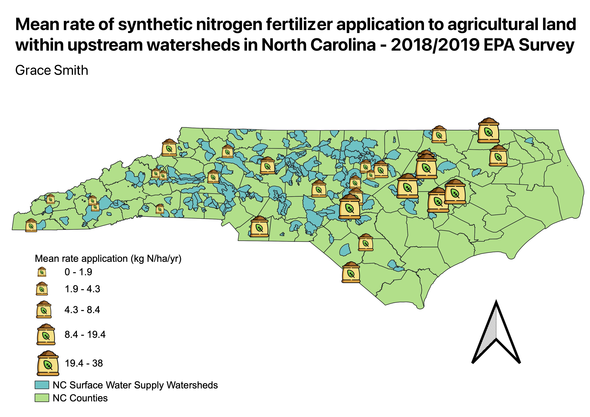

The map below shows the mean rate of synthetic fertilizer application for agricultural purposes upstream of watersheds in North Carolina. This data was collected during a EPA survey in 2018 and 2019 that tried to capture various influences of water quality. To represent the data I found a little fertilizer bag symbol and set up the proportional symbol to have 5 classes in the Equal Count mode. I chose to put the NC Surface Water Supply Watersheds in addition to bring context to the dat and the nearby watersheds impacted by the fertilizer application. I chose this topic because I have been really interested the phenomenon of eutrophication for a long time, which is anthropogenically driven by fertilizer runoff. By looking at this map one could predict different watersheds that may be more at risk from harmful algal blooms due to application of synthetic nitrogen fertilizers.
